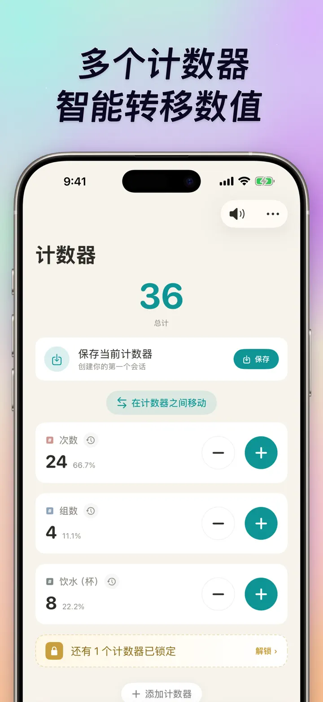
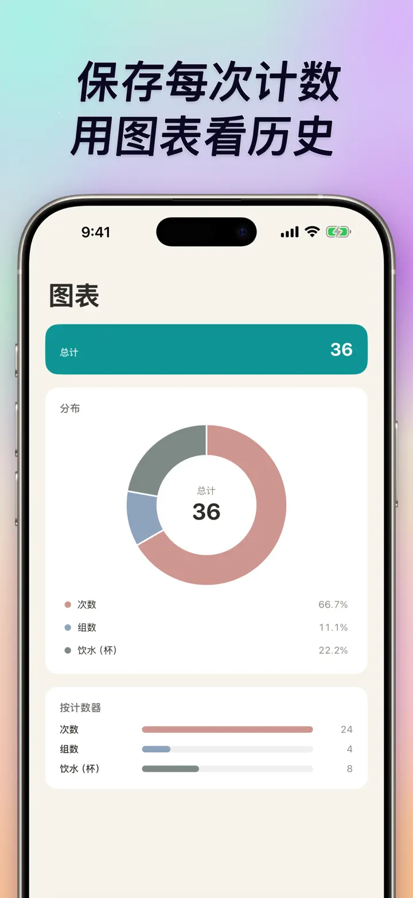
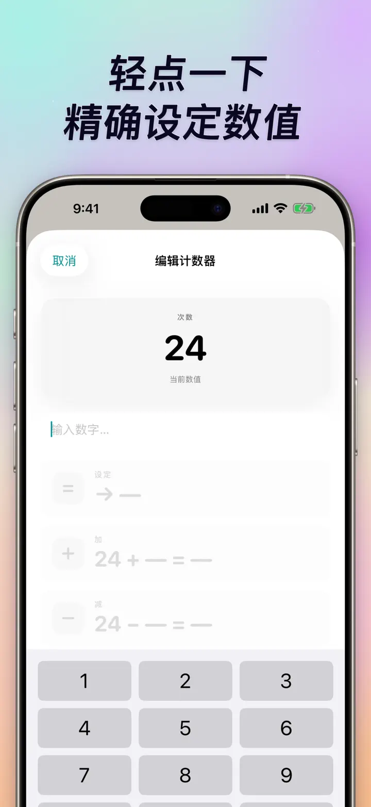
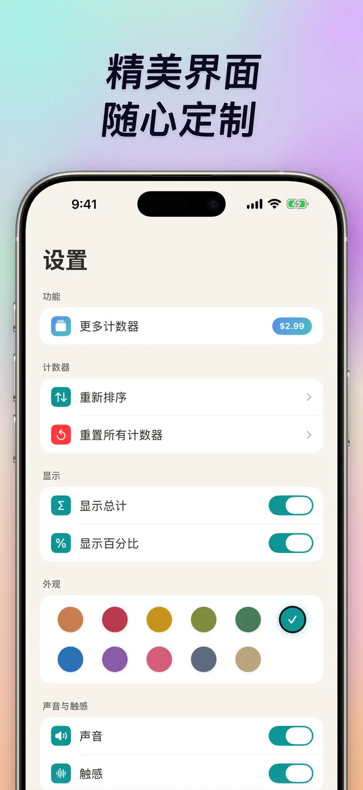
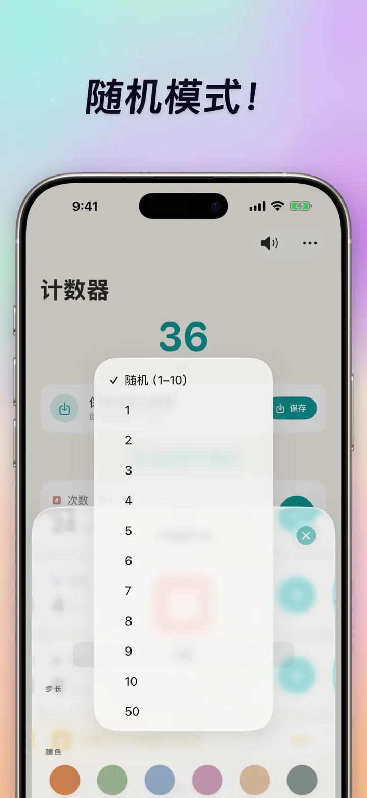

计数器123
Watch同步、点击器、比分
全新主屏幕小组件——直接在小组件上点按 +/- 计数，无需打开 App。计数器、点击器，支持 Apple Watch 同步、随机模式、图表与历史。
从 App Store 下载关于本应用
计数器123是专为 iPhone、iPad 和 Apple Watch 打造的快速、灵活的计数应用。你可以为每个计数器自定义名称和颜色，记录任何需要计数的事——举铁次数、念珠、编织段数、课堂积分、篮球比分、库存盘点、游戏得分。所有数据都存在本地设备，完全离线运行。
自定义计数器
- 为不同活动、比赛、日常流程或清单创建独立计数器
- 每个计数器可自定义名称和颜色
- 拖拽重新排序
- 长按可连续加减
- 完全离线——无需注册，不依赖云端
即时输入 & 批量操作
- 点击任何计数器直接设置起始值——无需从零重置
- 批量加减：任意数值一步到位
- 数值转移：计数器之间直接转移，不用重复加减
- 自定义步进：一次加 1、5、10、100 或任意数值
- 实时差异预览：每次变动都清晰高亮
随机模式
- 每次点击都随机生成 1 到 10 的新数值
- 可用加号加入随机值，也可用减号扣除随机值
- 适合训练、游戏、随机奖励、课堂活动和练习流程
- 每次随机点击都会记录在该计数器的历史中
总计 & 图表
- 一目了然的总计
- 百分比视图：每个计数器占整体的比例
- 柱状图：数值（#）与百分比（%）模式可切换
- 按数值排序，排名立即可见
历史 & 分享
- 完整变动记录：加、减、编辑全部留痕
- 计数器组合一键保存，随时复用
- 把计数器设置分享给队友、学生或朋友
- 历史可按日期日志、分组会话，或日/周/月统计查看
Apple Watch 实时同步
- 在 iPhone 或 Apple Watch 上更新，两个设备都会保持同步
- 真正的 watchOS 原生应用——不是壳
- 名称、颜色、数值完整同步到手腕
- 点一下计数，长按连续加
- 手机不在身边也能独立运行
iPhone、iPad 与 Apple Watch 全面适配
- 各种屏幕尺寸都有最佳布局
- iPad 一次显示更多计数器，支持 Split View
- 隐私至上：本地存储，无云端、无账号
适用场景
- 健身举铁的次数和组数
- 编织段数、钩针针数
- 念珠、手串、诵经念佛
- 课堂积分、学生点名
- 篮球、乒乓球比赛计分
- 库存管理、仓库盘点
- 麻将、桌游、扑克牌计分
- 游泳圈数、跑步圈数
- 广场舞队形计数
- 观鸟生态记录
- 活动人数点名
- 习惯养成、打卡追踪
下载计数器123，让每次计数都轻松自如——清晰、快速、隐私。
隐私政策: https://masawata.net/privacy-policy.html 使用条款: https://www.apple.com/legal/internet-services/itunes/dev/stdeula/
屏幕截图





计数器123
全新主屏幕小组件——直接在小组件上点按 +/- 计数，无需打开 App。计数器、点击器，支持 Apple Watch 同步、随机模式、图表与历史。
从 App Store 下载